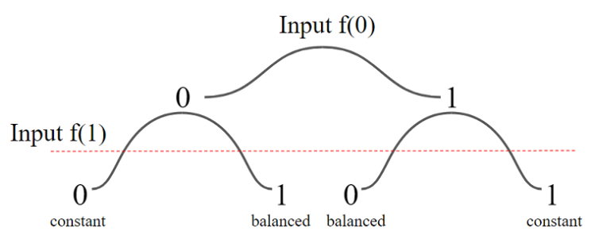
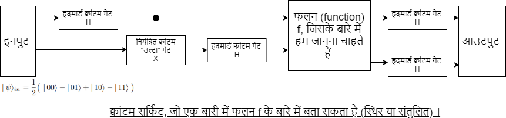

इस माध्यम के द्वारा मैं आपको एक मज़ेदार तरीके से क्वांटम संगणन के बारे में जानने व उसके साथ खेलने (सौजन्य आई.बी.एम.) का अवसर देना चाहूंगा। दोस्तों क्वांटम संगणन एक अजूबा है। यदि आप प्रौद्योगोकी के क्षेत्र से हैं तो आपको "मूर सिद्धांत" के बारे में पता ही होगा। पिछले तीन दशकों में करीबन हर दो सालों में संगणन चिपों का कद आधा होता चला जा रहा है। परंतु यह दौर अब बरकरार नहीं रह सकता, क्योंकि हमारे ट्रांसिस्टिर अब बेहद जटिल होते होते कुछ अणुओं के कद को छूने की कगार पर हैं, हालाँकि हमारी संगणनीय ज़रूरतें बढ़ती चली जा रही हैं। ऐसे में संगणन के क्षेत्र का वर्चस्व बनाये रखने के लिए हमें नए तौर-तरीके अपनाने होंगे।
इसवी सन् 1983 में भौतिकवैज्ञानिक रिचर्ड फेनमैन ने क्वांटम संगणन के बारे में आशा व्यक्त की थी। सूक्ष्म पदार्थ न्यूटन के सिद्धांतों का पालन नहीं करते। बल्कि वे क्वांटम सिद्धांतों से चलते हैं। वे किसी भी समय में दो अलग लक्षणों के रैखिक जोड़ में रह सकते हैं। इसे दर्शाने के लिए स्च्रोडिंगेर की क्वांटम बिल्ली का उदहारण दिया जाता है। सूक्ष्म पदार्थ एक क्वांटम बिल्ली की तरह हैं, जो किसी एक समय में जिवंत और मृत दोनों अवस्थाओं में रह सकती है।
परन्तु इसका संगणन से क्या लेना देना? जब आप दो लक्षणवाले (मान लीजिये + और -) तीन पदार्थों को लेते हैं तो आप उनको 2+2+2=6 परिमाणों में उनका सामूहिक वर्णन करते हैं। परन्तु क्वांटम पदार्थ एक दूसरे से भिड़ सकते हैं - यानी आपके पास अब 2x2x2=8 परिमाण आ जाते हैं। योग के बदले गुणन - यही क्वांटम पदार्थों के द्वारा किये गए संगणन के पीछे का राज़ है। गुणन से आपके परिमाण बढ़ते जाते हैं। इतने ज़्यादा कि महज़ 53 क्वांटम पदार्थों से आप दुनिया के सबसे शक्तिशाली संगणक "समिट" के छक्के छुड़वा सकते हैं। क्योंकि 2x2x...x2 53 बार करने से जवाब करीबन एक करोड़ अबज (1016) आता है!
क्वांटम संगणन के क्षेत्र में आये दिन नए आविष्कार होते चले आ रहे हैं। हाल ही में गूगल ने क्वांटम श्रेष्ठता (quantum supremacy) की घोषणा की। अधिक जानकारी के लिए यहाँ जाएँ। संक्षेप में क्वांटम श्रेष्ठता का अर्थ यह है कि एक क्वांटम संगणक ने वह काम कर दिखाया जो किसी भी "अक्वांटम" संगणक की पहुंच के बाहर है। यदि हम ऐसे ही प्रवेग से आगे बढ़ते रहें तो कुछ सालों में रसायनविज्ञान और औषधीय अनुसंधान में अप्रतिम सिद्धियाँ हाँसिल करना शुरू कर देंगे। और क्या पता, आनेवाली पीढ़ियाँ शायद क्वांटम इंटरनेट की आदी बन जाएँ!
यहाँ मैं आपको खुद आई.बी. एम. के क्वांटम संगणकों पर (IBM Quantum Experience योजना के तहत) क्वांटम संगणन करने का अवसर प्रदान कर रहा हूँ- एक मज़ेदार तरीके से। आप सचमुच बैठे बैठे यहाँ असली क्वांटम संगणकों का इस्तेमाल करने वाले हैं!
दिलचस्पी रखने वालों के लिए: पड़दे के पीछे IBM Qiskit प्रोग्रामिंग भाषा का उपयोग किया गया है।
क्यूबिट (क्वांटम द्विचर) परिचय, या आपकी निजी "स्च्रोडिंगेर बिल्ली": सबसे पहले आप एक क्वांटम द्विचर तैयार करें। सरल शब्दों में यह एक क्वांटम बिल्ली है - जो जिवंत (+) और मृत (-) दोनों अवस्था में रहती है।
क्वांटम द्विचर तैयार होने पर आप इसे एक पासे की तरह उछाल सकते हैं - तकरीबन आधी बार जवाब "+" आएगा और बाकी के समय "-" । निम्न बटन दबाने पर क्वांटम संगणक 1000 बार यह प्रयोग करेगा और आपको परिणाम दिखायेगा:
बटन दबाने के बाद कृपया प्रतीक्षा करें। आई.बी.एम. का क्वांटम संगणक व्यस्त हो सकता है .....
दोस्तों अभी तो हमने एक बेहद आसान क्वांटम संगणन कार्य किया। पर अभी कुछ पेचीदा करते हैं। दूसरे कार्य में आप ये समझेंगे कि क्वांटम संगणन क्यों शक्तिशाली है।
मान लीजिये आपके पास एक प्रोग्राम है जो 0 या 1 इनपुट लेता है और 0 या 1 आउटपुट बतौर आउटपुट देता है। आपके पास दो विकल्प हैं - या तो यह प्रोग्राम "संतुलित" (balanced) है , वरना यह प्रोग्राम स्थिर (constant) है। संतुलित प्रोग्राम 0,1 देने पर दोनों बार अलग आउटपुट देता है। जब कि स्थिर प्रोग्राम 0, 1 देने पर या तो दोनों बार 0 अथवा दोनों बार 1 देता है।
अब एक आम, अक्वांटम संगणक सिर्फ एक बार प्रोग्राम चलाकर यह नहीं कह सकता कि प्रोग्राम स्थिर (constant) है या फिर संतुलित (balanced) है। (ज़रा सोचिये इस बारे में)
तो फिर क्वांटम संगणक क्या यह एक ही बार प्रोग्राम चलाकर हमें जवाब दे सकता है क्या? याद कीजिये क्वांटम पदार्थों के भिड़ाव के बारे में! यदि हम दो क्वांटम पदार्थों को निम्न स्थिति में ला सकते हैं, तो यह काम सरल हो सकता है।
अधिक जानकारी के लिए यहाँ जाएँ।
यहाँ आपके लिए IBM का क्वांटम संगणक देउत्स्च कलन विधि (Deutsch algorithm) चलाएगा और अपना जवाब आपको बताएगा।
अपना फलन (function) चुनें (1-4 के बीच में, चार निम्नलिखित विकल्प):
1: '(0,1) → (0,1)', 2: '(0,1) → (1,0)', 3: '(0,1) → (0,0)', 4: '(0,1) → (1,1)'
Enter your function choice: